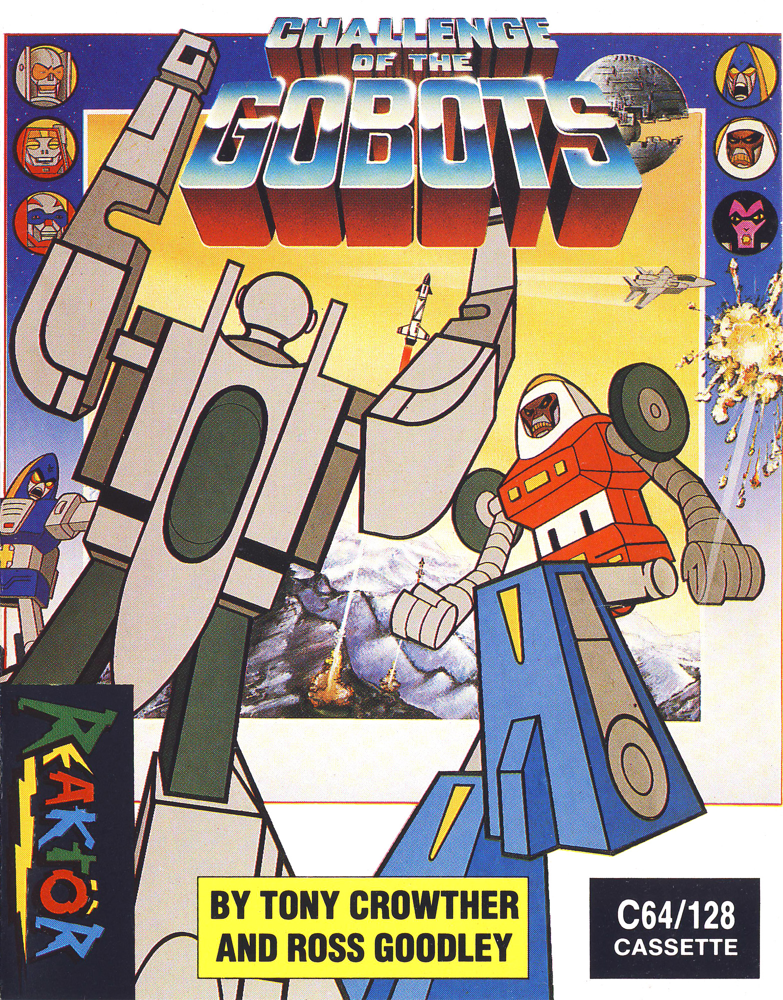

Challenge of the Gobots
Challenge of the Gobots is a 1987 arcade action game published on the Reaktor label. Game design and coding are credited in the original instructions to Tony Crowther and Ross Goodley, with storyline by RATT, text by K. Blake and R. Goodley, audio by We M.U.S.I.C., and the instructions by IFRIT. The player takes the role of the courageous Leader 1. Scooter clones are collected by landing on them, then released with the bomb control and hurled at enemy bases. Huge rocks can also be torn from the ground or ceiling and thrown at enemies, although they cannot damage the bases. Destroying the bases advances the player through the levels, while aggressive play fills the score bar and can earn promotion or an extra life. The instructions also describe rescuing humans who fall from the copter, a task reserved for players who have reached the top rank, plus configurable controls, a high-score display, and a practice level before beginning the main game.